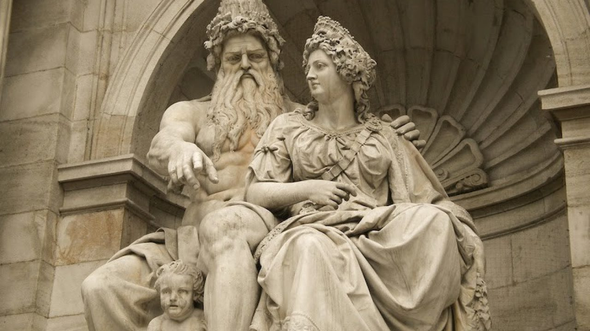
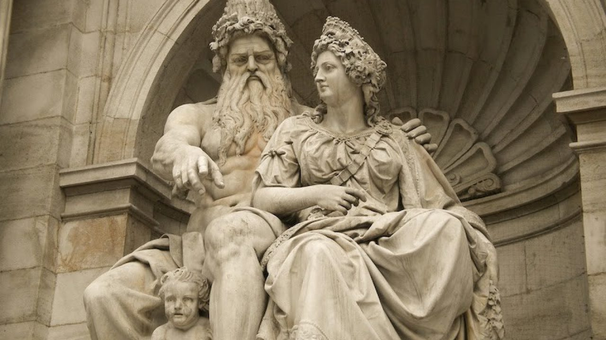
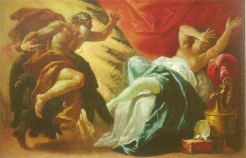

Hera
Introducción
Hera tambén llamada Juno por los romanos, es la diosa con mayor rango en el Olimpo, pues es esposa y hermana de Zeus. Esta diosa es la hija mayor de Cronos y Rea, y como todos sus hermanos, fue tragada por su padre, hasta que Zeus pudo liberarlos a todos.Hera es la diosa defensora de las mujeres casadas, de la maternidad y de la familia. Era conocida por sus celos hacia las innumerables infidelidades confesadas de su marido, así como por su espíritu vengativo hacia sus amantes y descendencia.
 

Nacimiento
Hera fue una de las hijas de Cronos y Rea. Según el poeta Hesíodo relata en su Teogonia, la pequeña diosa fue una de las víctimas de la furia devoradora de su padre. Cronos, para evitar que uno de sus vástagos le destronara, como él mismo había hecho con su propio padre, les devoraba uno a uno a medida que éstos iban naciendo. De este modo acabó Hera engullida por su propio padre. Sin embargo, la astucia de Gea logró que uno de sus hijos, Zeus, se salvara de la furia devoradora de Cronos, y cuando éste creció desafió y derrotó a su padre, obligándole a que vomitara a todos sus hermanos, con Hera entre ellos. Los hijos de Crono se aliaron para arrebatar el poder a los titanes, aliados de su padre, y, una vez, logrado este objetivo, se repartieron entre ellos el mundo. Hera fue elegida por Zeus como su legítima esposa, un papel que cumplirá con resignación pese a los múltiples amoríos del soberano de los dioses.
Algunos mitos
IO
Io era una princesa, hija del rey de Argos, que había sido seducida por Zeus. En uno de sus encuentros sexuales, Hera estuvo a punto de descubrir en pleno acto el adulterio de su
esposo. Sin embargo, en el último instante, Zeus convirtió a Io en una ternera blanca. Sospechando del engaño de su esposo, Hera pidió a Zeus que le regalase el animal como prueba de fidelidad, petición a la que el dios no
pudo negarse. Hera recluyo a la princesa transformada en ternera en una gruta donde Zeus no pudiera encontrarse con ella, y para defender la entrada de la cueva pidió al monstruo Argos, una criatura con cien ojos, que la
vigilara día y noche. Tiempo después, Zeus localizó a la joven y pidió a su hijo Hermes que acabara con el monstruo Argos.

El dios mensajero cumplió su misión y liberó a la joven después de acabar con la vida de la bestia.
Cuando Hera descubrió el cuerpo de Argos decidió premiar su fidelidad convirtiendo sus múltiples ojos en el adorno de la cola de su animal sagrado, el pavo real.La cólera de Hera contra la princesa Io no terminó con la muerte
de Argos. Resignada a no poder tenerla en cautiverio, Hera envió un enorme tábano para que atormentara día y noche a la ternera. Desesperada, Io inició un peregrinaje por las costas del Mediterráneo tratando de escapar de las
picaduras del tábano. En su largo camino, Io sufrió todo tipo de penalidades, hasta llegar a Egipto, donde se convirtió en sacerdotisa de la diosa Isis.
Hera y Séleme
Después de ser seducida por Zeus, Sémele, princesa de Tebas, quedó encinta. Hera descubrió la nueva infidelidad de su esposo y, como era habitual en los mitos clásicos, decidió
cobrarse su venganza en la figura de la amante. La diosa se hizo pasar por una sirvienta de Sémele y la convenció de que pidiera a Zeus que, como prueba de que su amor era verdadero, se presentase ante ella en el apogeo de su
esplendor, sin cubrirse con disfraces ni trasformaciones mortales. Sémele, engañada por Hera, hizo que Zeus jurara por la laguna Estigia que le concedería cualquier petición que ella le hiciera.

El dios accedió, sin darse
cuenta de que aquel juramento supondría la muerte para su amada. Sémele le pidió al dios que se presentara ante ella en su verdadera forma, y Zeus, obligado por el juramento, tuvo que acceder. La luz que irradiaba el dios
abrasó a la joven Sémele, que murió al instante. Para evitar que el hijo que la princesa albergaba en su interior corriera la misma suerte, Zeus tomó el feto y lo cosió a su propia pantorrilla, de modo que terminara la gestación
en su propio cuerpo. Meses después nació un bebé que recibió el nombre de Dioniso, “el nacido dos veces”.